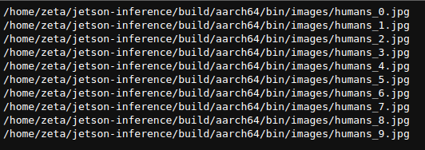
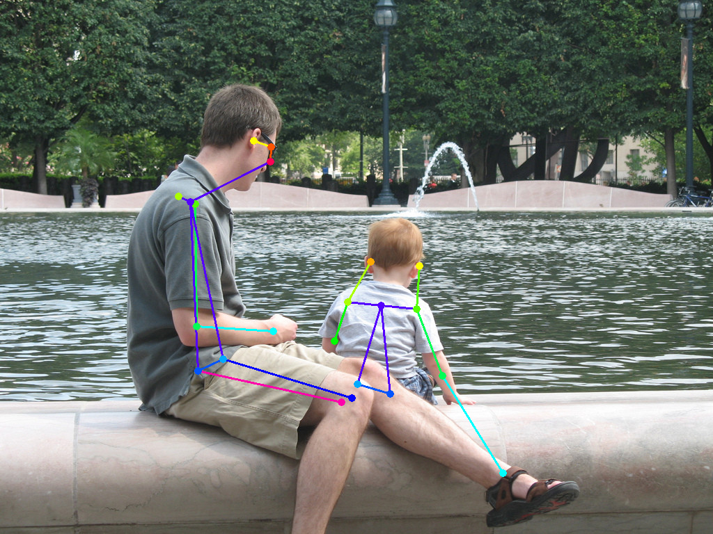

Follow Along!
Follow along: Pose Estimation Example
The program launching process along with parameter settings are all simplified and set up on the Jupyter Notebook Environment.
- Open the pose_estimation.ipynb jupyter notebook
- Initialize your output stream, and your path, and import in the Image library
- Check all the available human pictures within the system
- Pick one of the image with human(s) and initialize the image/ output name.
- Execute Pose Estimation on the chosen picture
- Display the result
(The Jetson Board used for these examples are => Jetson Nano)
02_4-1. pose_estimation.ipynb
- Running the cell codeCtrl + Enter
{kind=link}
Initialize your output stream, and your path, and import in the Image library
from IPython.display import Image
%env DISPLAY=:0
%env PROGRAM_PATH=/home/zeta/jetson-inference/build/aarch64/bin
%env INPUT_PATH=/home/zeta/jetson-inference/build/aarch64/bin/images
%env OUTPUT_PATH=/home/zeta/jetson-inference/build/aarch64/bin/images/test
input_path='/home/zeta/jetson-inference/build/aarch64/bin/images'
output_path='/home/zeta/jetson-inference/build/aarch64/bin/images/test'
Check all the available human pictures within the system
!ls $INPUT_PATH/humans_*
{kind=link}
Pick one of the image with human(s) and initialize the image/ output name.
image_name = 'ChangeMe' output_name = 'human_result.jpg' %env IMAGE_NAME = $image_name %env OUTPUT_NAME = $output_name Image(filename=input_path+'/'+image_name)
Guess the pose!
%%capture !python3 $PROGRAM_PATH/posenet.py --network=resnet18-body $INPUT_PATH/$IMAGE_NAME $OUTPUT_PATH/$OUTPUT_NAME
Show the resulting image
Image(filename=output_path+'/human_result.jpg')
{kind=link}